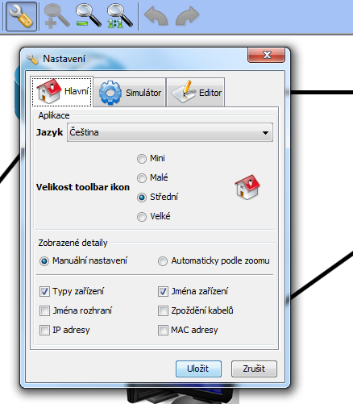
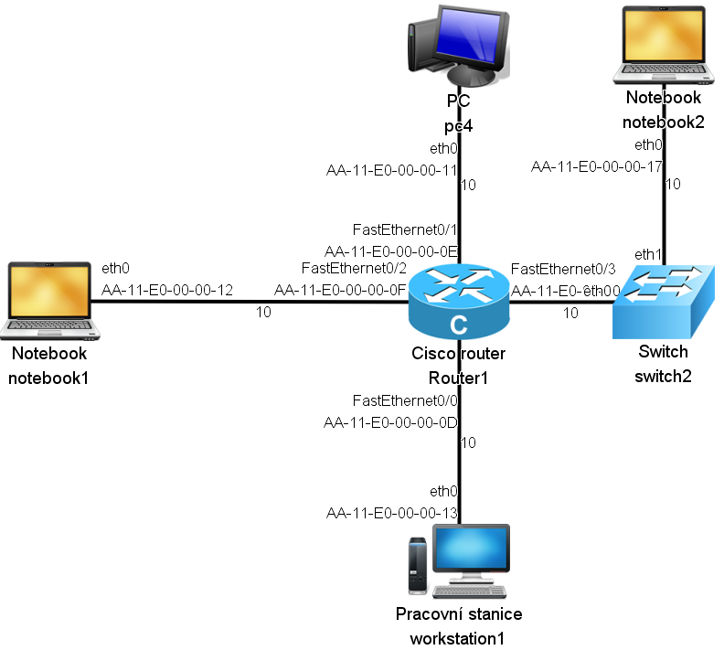

Tutorial 1: Editační režim
- Úvodní obrazovka
- Vytvoření nového projektu
- Vkládání komponent
- Spojování komponent
- Manipulace se sítí
- Nastavení parametrů komponent
- Nastavení zobrazených detailů
- Uložení projektu
Nastavení zobrazených detailů
Nastavení zobrazovaných detailů se provádí v okně Nastavení
Manuální nastavení
V manuálním nastavení je možné vybrat, které detaily budou zobrazeny. Na výběr jsou:
- Typy zařízení
- Jména zařízení
- Jména rozhraní
- IP adresy
- MAC adresy
- Zpoždění kabelů
Po vybrání všech detailů vypadá síť následovně:
Automaticky podle zoomu
Množství detailů je také možné nechat na automatickém nastavení, ve kterém množství detailů závisí na aktuální úrovni zoomu. Při mírném oddálení je detailů o poznání méně než na obrázku výše:

Další částí tutorialu je: Uložení projektu.